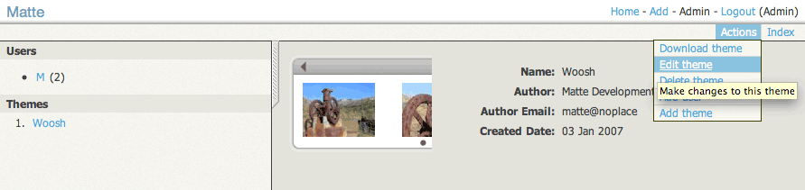

Matte: Theme HOWTO: Overview
The look and feel of shared albums can be completely customized in Matte
by way of themes. This document describes how web-heads can write customized
themes for Matte.
XSLT
In Matte themes are rendered by transforming XML with XSLT 1.0.
Therefore you must be comfortable with the XSLT language in order to write a Matte theme. There are
good and not-so-good consequences for using XSLT:
-
No coding required. When using some rendering technologies, such as JSP, PHP, etc.
you must be comfortable with writing code in that particular language, which can be
overwhelming to some, powerful to others, and generally messy. XSLT, on the other hand,
is a relatively simple language designed exactly for this type of job: transforming
XML into other markup languages (e.g. XHTML, HTML, WML, other XML, etc). We will concentrate
here on transforming into XHTML, as this is the language used for normal web pages and
most themes will focus in this area.
-
Less-known language. Of course you might say that XSLT is, in fact,
coding. That is true. The language is very high-level and focused on the specific task at
hand, turning XML into XHTML. The only major down side of XSLT is that not a lot of
web-heads are familiar with XSLT, at least not as many as familiar with JSP, PHP, etc.
-
Guaranteed well-formed XML results. Using XSLT to generate XHTML ensures
you will generate well-formed results. It will not be possible to generate an un-closed
<br> tag, for example.
You can, in fact, generate HTML results with XSLT that are not valid
XML documents, by setting the output method to html (or text.
When the output method is set to xml, however, you are guaranteed to
generate well-formed XML
results.
-
Isolated code. By using XSLT for the rendering
language, the themes are nicely isolated from the main Matte Java code, and generally
don't have access to Matte, or Java, internals. This helps keep themes clean, focused,
and provides some relief to administers of Matte systems that themes are not going to
run off and do something naughty.
For help getting started with XSLT, check out the
XSLT article Wikipedia which contains many links at the
bottom to tutorials and more information on XSLT.
Theme-able UIs
In Matte there are three main user interfaces that are theme-able. Think of these as unique URLs which
are accessible by users:
-
Browse: a view of all of a single user's shared albums, generally designed to
display each album as a link to that album's slide show (see Album next).
The built-in Woosh browse view.
-
Album: a single shared album, generally designed to display all the media items
contained in the album as a slide show.
The built-in Woosh album view.
-
Item detail: information about a single media item, generally designed to display
all available information about that item, such as metadata, comments, ratings, etc. This is
usually used in album themes to dynamically show this information when viewing a specific
media item. The built-in Woosh theme uses AJAX to display this information, for example.

The built-in Woosh item detail view.
Going forward we will refer to these UIs as unique views, e.g. "browse view", "album view",
and "detail view".
ThemePak
Themes are installed and managed in the form of ThemePaks, which are zip archives following certain
conventions:
- An album view XSLT file, named theme.xsl. This is required.
- A browse view XSLT file, named browse.xsl. This is required if
the theme is to be used for album browsing.
- A detail view XSLT file, named info.xsl. This is optional and
can be used by the theme for dynamically displaying detailed information
about selected media items.
- The theme thumbnail PNG image, named thumbnail.png.
This is optional, but recommended. This thumbnail should be designed
as a small icon for the theme, sized to about 160x120 pixels.
- The theme preview PNG image, named preview.png.
This is optional, but recommended. This preview shold be designed
as a showcase for what the theme features are, sized to about
1024x768 pixels.
The theme metadata properties file, named theme.properties.
This is optional, but recommended. It allows the ThemePak to define
the following properties:
- theme.name
- The name of the theme.
- theme.author
- The name of the theme's author(s).
- theme.authoremail
- The email address of the theme's author(s).
- theme.created
- The creation date of the theme, in the format
yyyy-mm-dd (eg. 2006-09-26).
- The theme messages resource bundle, named
theme-messages[_lang].properties. These are optional. They can be
used to provide localized messages to make the theme work in different
languages. One of the bundles can omit the
_lang portion of the file name
to be used as the default message bundle.
- Any other resources required by the theme, such as CSS files, images,
JavaScript, etc.
Starting a new theme
Administrators of Matte systems can manage themes by going to the Admin page after logging into Matte.
From there you can view, install, update, and remove themes.

The Matte administration screen, showing the built-in Woosh theme.
A great way to get started on a new theme is to modify an existing theme. You can copy an existing
theme, create a test album and share it using the new theme, configure Matte to reload the theme XSLT
on each request, and then interactively make changes to the XSLT to work on changes.
The built-in Woosh theme is thus a good place to start. Follow these steps:
-
Start up Matte and log in as an administrator (Matte creates an administrator for
you the first time it runs, the login is matte-admin and the password
is password). Then use the Setup Wizard to update the XSLT cache
property to No. The SetupWizard can be loaded by typing in the URL
/matte/setupWizard.do (leaving your server name, etc.).
Also note the value of your Themes directory path, on the
Filesystem setup page. This is where your uploaded themes will go later on.
- Restart Matte for the XSLT setting to take effect.
- Log back into Matte as an administrator, and from the Admin screen in Matte, click on
the "Woosh" theme from the list on the left. Then choose the "Download theme" action to
download the entire Theme as a Matte ThemePak.
- Unzip the ThemePak and create a new
theme.properties file (as described previously) to give this
theme a new name, author, etc.
- Zip up all the theme contents (not the theme's top-level folder, but just all the files/folders
inside that) into a new ThemePak.
- Use the Matte Admin screen to upload the new ThemePak as a new theme. Now you have copied the Woosh
theme into a new theme. The new theme's files will be located in your theme directory that
you specified in the Setup Wizard. Inside the theme directory there will be another
directory named themes and inside that will be a directory of the Matte-assigned
unique ID for your new theme. For example if your theme directory is
/var/matte/themes and Matte assigns your new theme an ID of 382
then the theme resources will be located in /var/matte/themes/themes/382.
Note the duplicate "themes" directory, this is not a mistake.
- The Woosh theme makes use of an XSLT templates file called
theme-util.xsl. This file
exists in the Matte WAR at /WEB-INF/themes/theme-util.xsl. In order
for the new custom theme to make use of this file, copy it to the root of your
custom theme directory (the one specified in the Setup Wizard). This XSLT templates
file provide handy and oft-used functionality required by themes.
- Go back to the Home screen now, and create a test album. Add some items into the album and
then share the album using the new theme (go to Actions > Album Sharing, choosing
your new theme from the Theme menu.
You should now be able to view your shared album using your new copy of the Woosh theme
by clicking on the link provided after you save the album's sharing settings. You are
now ready to start modifying your new theme however you see fit!
XWeb XML Data Model
Matte uses an XML data model based on a view platform called XWeb. XWeb provides an XML data model
that includes web elements that web-heads will be familiar with. Here is a sample XWeb XML document
with all Matte-specific XML removed:
Note the use of the XWeb namespace http://msqr.us/xsd/jaxb-web, mapped to the x
prefix. These elements provide you with all the data elements needed to be able to see what was requested
by the person's browser, what parameters were provided, the person's language settings, etc. The elements
you see are:
- <x:x-data>
- The root XML element.
- <x:x-context>
-
Some specialized information about the web request, which will include:
- <x:x-server-name>
- The name of the server hosting Matte. This is usually only needed when constructing
full URLs, such as when constructing the URL for the Atom RSS link from the browse view.
- <x:server-port>
- The port the server hosting Matte is running on.
- <x:user-agent>
- The browser client requesting the page. This can be used for browser-sniffing style
code in the XSLT where you want to return different content based on the browser making
the request.
- <x:user-locale>
- The browser client's locale settings, for internationalization support.
- <x:web-context>
- The URL path to the Matte web application. By default this is
/matte
but can be changed to anything.
- <x:path>
- The URL path, after the web context, of the current request.
- <x:x-session>
- A list of
<x:x-param> elements, one for each item in the current user's
web session. The Matte session will contain information like the currently logged in user details.
- <x:x-request>
- A list of
<x:param> elements, one for each request parameter provided on
the current request.
- <x:x-request-headers>
- A list of
<x:param> elements, one for each HTTP header provided on the
current request. These are not usually needed in Matte themes, but can be handy in some
situations.
- <x:x-model>
- This element will hold the Matte data model XML tree, such as the selected album, item, etc.
If you are familiar with Java servlets, these data elements will be very familiar to you. The formal
definition of XWeb is in the form of an XML Schema, located here.
Matte XML Data Model
Inside the <x:x-model> XWeb element (listed above) Matte will generate a Matte-specific
XML tree in the form of a <m:model> element. Note the namespace for Matte XML elements:
http://msqr.us/xsd/matte. Internally Matte uses the m namespace prefix for this
namespace, which we'll use in this document as well. This element is a container for
<m:album> and <m:item> elements. Here is an example Matte XML model
document, this one from a detail view request:
This provides a good example of the Matte XML elements you'll work with in a theme.
By default you can view the source XML document for any Matte
URL by passing an xml=true parameter with the request. For example
a Browse View URL might look like http://myserver.com/matte/browse.do?user=XYZ.
To view the XML source used for this page, you can add &xml=true to
the URL, like this: http://myserver.com/matte/browse.do?user=XYZ&xml=true
The elements in more detail are listed here:
<m:album>
This element represents an album, which is a collection of items. In themes, the following
components of this element are especially important:
- @album-date
- The date assigned to the album. This date is optional, and if not provided
the
@creation-date attribute can be used, which is the date the album
was created.
- @anonymous-key
- This key is used in the URL for the album view to display the album.
- @modify-date
- The date the album was last modified. This will not be present if the album has
never been modified after its initial creation.
- @name
- The name of the album.
- <m:comment>
- A description or comment about the album.
- <m:item> (list)
- Any number of of these elements can appear in an album, and represent the items
in the album.
- <m:owner>
- The user that created this album.
- <m:poster>
- An optional "poster" item to be used as the album's thumbnail.
- <m:theme>
- The theme assigned to this album. This is needed in the album and detail views
in order to render links to theme resources such as images, JavaScript, etc.
<m:item>
This element represents a media item, such as a photo, audio file, video file, etc.
In themes, the following components of this element are especially important:
- @creation-date
- The date the item was created. This may be the date the item was added to Matte,
or for some media types the date the item was originally created. For example JPEG
photos taken with digital cameras come with the date the photo was taken embedded in
the image file, and Matte will extract that date and use that for the item's
creation date. Note that the time zone associated here is generally the time
zone that Matte is running in, not the time zone of the media item. See the
<m:tz> and <m:tz-display> elements below.
- @file-size
- The size of the original media item's file, in bytes.
- @height
- For media types with a height, such as photos or videos, the original height
of the media, in pixels.
- @hits
- The number of times this media item has been viewed (not as a thumbnail).
- @item-id
- The unique ID of this item, required when rendering the URLs to link to the
item.
- @mime
- The MIME type of this media item.
- @name
- The name of the item, defined by the user. For some media types Matte will extract
the name embedded in the file, such as the song title from MP3 files. For all
others this is set initially to the name of the media item's file. Users can replace
this with anything they like, however.
- @path
- A file path for the original media item in Matte. This path is always relative from
the user's collection directory.
- @width
- For media types with a width, such as photos or videos, the original width of
the media, in pixels.
- <m:metadata> (list)
- Any number of these elements can be associated with an item. They represent
metadata extracted from the item's file. For example for digital photos this
list will be populated with EXIF data. They key names are fairly self-explainatory,
and the element's content will contain the associated metadata value.
- <m:tz>
- The time zone of the media item's
@creation-date. This is mostly
useful for photos from digital cameras, which do not store a time zone with
the dates they add to the photos. Generally you set a time zone on the camera, and
then it uses that time zone for the dates and times it embedds in the photos you
take.
- <m:tz-display>
- A time zone to display the
@creation-date of this item in. This is
used in conjunction with the <m:tz> value to translate the
time zone of the item into a different time zone. Again this is mostly useful for
photos from digital cameras, where the camera's time zone is set to a different
time zone than the location the photo was taken. This time zone represents the
time zone the photo was taken in, or the "local time" of the photo, and can be
used to display the local time of the photo rather than the time zone that the
camera is set to.
Linking to theme resources
In order to generate links to theme resources, such as HTML <link> tags for
your theme's CSS, or HTML <script> tags for your theme's JavaScript, you should
call the get-resource-url XSLT template. This template takes the following
parameters:
- resource
- The path of your theme resource, relative to the root of your theme's
directory. For example
my-javascript.js.
- theme
- The ID of the currently running theme. This is available via the
/x:x-data/x:x-model[1]/m:model[1]/m:theme[1] XPath, or you
can use the pre-defined helper variable $theme.
- web-context
- Matte's servlet context path, normally
/matte. This is
also pre-defined as the helper variable $web-context.
For example, here's how you would generate an HTML JavaScript <script> tag
for the behaviour.js theme resource:
Linking to media images
In order to link to thumbnail images or full-size images, for example to generate
an HTML <img> tag, call the render-media-server-url XSLT template.
This template takes the following parameters:
- item
- A
<m:item> XML element.
- album-key
- The
@anonymous-key attribute of the <m:album>
element that the item is shared with.
- size
-
One of the predefined Matte size constants, defined as one of the following:
- BIGGEST (1600x1200)
- BIGGER (1024x768)
- BIG (800x600)
- NORMAL (640x480)
- SMALL (480x320)
- TINY (320x240)
- THUMB_BIGGER (240x180)
- THUMB_BIG (180x135)
- THUMB_NORMAL (120x90)
- THUMB_SMALL (64x48)
These pixel dimenstions listed here are the defaults provided by Matte,
but the sizes are configurable by the system administrator so may be different
than what is listed here. When in doubt, choose NORMAL for
full-size viewing and THUMB_NORMAL for thumbnails.
Generally you will not want to hard-code the values
for full-size images into your theme, however, since users visiting
your shared albums will be given the opportunity to specify the desired
image size themeselves. You would thus want to allow for your theme
to be able to display any of these sizes.
- quality
-
One of the predefined Matte quality constants, which represent how
much Matte will attempt to compress images to achieve smaller file sizes
at the expense of image quality. The constants are defined as one of the
following:
- HIGHEST (little or no compression)
- HIGH (small amount of compression)
- GOOD (decent amount of compression,
suitable for online viewing
- AVERAGE (fairly high amount of compression,
visibly lower image quality but much smaller file size)
- LOW (very high amount of compression, very poor
image quality, but very small file sizes, suiteable for
very slow internet connections or thumbnail images)
When in doubt, use GOOD for full-size viewing, and either
GOOD or AVERAGE for thumbnails.
Generally you will not want to hard-code the value
for full-size images into your theme, however, since users visiting
your shared albums will be given the opportunity to specify the desired
image quality themeselves.
- web-context
- Matte's servlet context path, normally
/matte. This is
also pre-defined as the helper variable $web-context.
For example, here's how you would generate an HTML <img> tag for a thumbnail
image (where $display-image is a variable holding a <m:item>
element and $display-album is a variable holding a <m:album>
element):
Next: Browse View
Continue next with details on the Browse View.